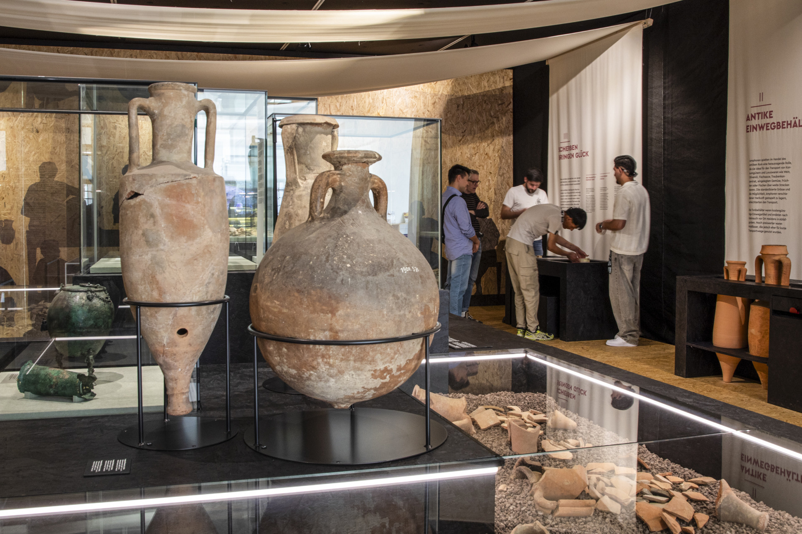

Heute geöffnet: 10.00 – 17.00 Uhr
Alle Locations sind gleich animiert, nur Bild und Titel wechseln (im CMS pro Seite, mit Fokuspunkt fürs Mobile). Die Öffnungszeiten werden aus den heutigen Zeiten berechnet; solange geöffnet ist, pulsiert das Uhr-Icon ruhig.
Hero für Museum, Tierpark und Römerhaus – alle gleich animiert. Bild pro Seite austauschbar, Fokuspunkt fürs Mobile wählbar, Öffnungszeiten aktualisieren sich automatisch (Anforderung AR).
| Was | Auslöser | Dauer · Easing |
|---|---|---|
| Bild zoomt von 110 % auf 100 % und blendet ein | Laden | 1.8 s · AR.ease.out |
| Titel steigt aus der Maske (yPercent 105 → 0) | Laden, +0.25 s | 1.0 s · AR.ease.out |
| Breadcrumbs, Button, Öffnungszeit blenden auf (y 12 → 0) | Laden, +0.5 s, 70 ms gestaffelt | 0.6 s · AR.ease.out |
| Uhr-Icon: weisser Ring pulsiert (Scale 1 → 2, Deckkraft 0.45 → 0) | Endlos, solange geöffnet | 2.4 s · CSS --ease-out |
| Öffnungszeit: Text wechselt mit kurzer Blende | Minütlich | 0.2 s · AR.ease.out |
| Bild-Parallax (−8 % → +8 %), Inhalt blendet leicht aus | Scroll | scrub: true |
| Reduzierte Bewegung | Nur Überblendungen (Deckkraft), kein Zoom, kein Aufsteigen, keine Parallax, kein Pulsieren. | |